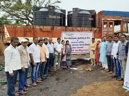

WaterAid
Clean Water for Ruralia
WaterAid implemented a comprehensive clean water project in the drought-prone region of Ruralia, benefiting over 50,000 people across 30 villages.
Impact:
Reduced waterborne diseases by 70% and increased school attendance by 40% in the region.
WaterAid's project has transformed our lives. We now have clean water right in our village!